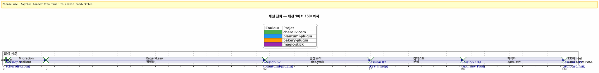
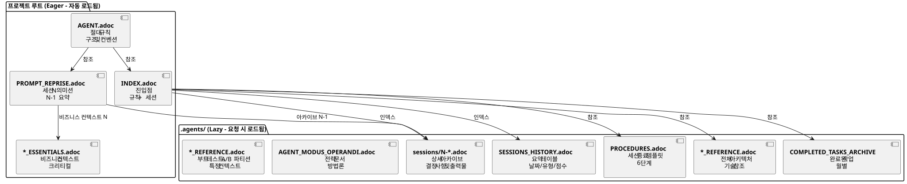

AsciiDoc으로 AI 에이전트 제어하기: 컨텍스트 누수 없는 Opencode 세션을 위한 나의 Eager/Lazy 전략
게시: 24 April 2026
요약
Opencode와 같은 IA 에이전트와 함께 여러 세션에 걸쳐 복잡한 프로젝트를 진행할 때 근본적인 문제에 직면하게 됩니다:컨텍스트 유출. 에이전트는 이전 세션을 기억하지 못합니다. 그에게 설명된 모든 것 — 아키텍처, 규약, 백로그 상태 — 가 손실되었습니다. 매 세션마다 이 컨텍스트를 재구성하는 것은 비용이 많이 들고 느리며 오류의 원인이 됩니다.
이 글은 이 문제를 해결하기 위해 내가 구축한 수공예 전략을 설명한다: AsciiDoc 파일을 기반으로 한 지속 가능한 거버넌스 시스템, 그리고 이분법즉시/지연컨텍스트 토큰 소비를 최적화하고, 그리고필수적인 세션 종료 절차연속성을 보장하기 위해
장소 : 월요일 4월 21일, 오전 9시
Opencode를 다시 열어 Gradle 플러그인 작업을 이어갑니다.plantuml-plugin. 어제 저녁, 저는 API 키 풀의 아키텍트 담당자와 세 시간을 토론했습니다 — 라운드 로빈 로테이션, 할당량 관리, 자동 페일오버. 오늘 아침, 에이전트는 금붕어 눈으로 나를 바라본다.
_ — 안녕하세요, 저는 Opencode 어시스턴트입니다. 오늘 어떻게 도와드릴까요? _
아니요 — 아 맞다, API 키 풀, 우리는 YAML 구조에 있었죠. 아니요 — 주의,PlantumlManager`은 Kotlin 싱글톤 객체이지 클래스가 아닙니다. 아니요 — 아니, 어제 우리가 결정한 것이`SyntaxValidationResult`중첩된 sealed class 상태로 남아 있었다`PlantumlService.
모든 것을 다시 해야 한다. 혹은 더 정확히 말하면, 모든 것을 다시 설명해야 한다. 나는 내 세션의 처음 20분을 들여 어제 에이전트가 이미 손에 넣었던 맥락을 재구성하는 데 쓸 것이다. 소모된 토큰으로 20분. 나는 코딩을 할 수도 있는 20분이지만, 대신 의무적인 교육을 하고 있다.
이것은 Opencode의 버그가 아닙니다. 이것은 대화형 LLM의 근본적인 성질입니다: 두 세션 사이에서는 작업 기억이완전히 삭제됨. 에이전트는 이전 미션, 내린 결정, 식별된 함정, 함께 작성한 코드를 기억하지 못한다
저는 그것을 수십 번 경험했습니다. 네 개의 동시에 진행되는 프로젝트에서요. 몇 주 동안 이어지는 세션과 함께요. 저는 계산해 보았습니다: 평균적으로,세션 시간의 30~40%에이전트를 재맥락화하는 데 전념되었다. 프로젝트 세션 87에서`plantuml-plugin`, 나는 무너졌다. 나는 더 이상 그 문제를 열 번째로 설명하는 것을 감당할 수 없어서`AttemptEntry`는 최상위 레벨의 data class인`DiagramProcessor.kt`.
내가 필요로 했던 건 시스템이었다. 해킹이 아니라. 진정한 거버넌스였다.
창세기 : 혼돈에서 방법으로
첫 번째 세션 : 어둠의 시대
Opencode와 함께한 첫 번째 프로젝트,plantuml-plugin, 아무런 지배 구조 없이 시작되었습니다. 저는 질문을 하고, 에이전트가 답변하고, 우리는 반복하고, 세션이 끝납니다. 그리고 다음 날 우리는 다시 제로에서 시작합니다. 세션 1이었고, 그다음 세션 2, 그다음 세션 3… 결국 세션 62에 이르러서 저는 같은 아키텍처를 재설명하는 데 누적된 시간을 잃었다는 것을 깨달았습니다.
세션 62에서, 숫자들이 여기 있습니다:198개의 단위 테스트가 통과합니다, 42개의 기능 테스트가 검증되었습니다, 플러그인이 작동합니다. 하지만 인지 비용은 감당할 수 없습니다. 각 새로운 세션은 프로젝트 구조에 대한 20분 독백으로 시작됩니다.
site.yml의 파괴된 에피소드 (세션 2, bakery-plugin)
이 방법도 재난에서 비롯됩니다. 프로젝트에서`bakery-gradle`, 세션 2에서, 저는 에이전트에게 파일을 수정하도록 요청합니다`site.yml`. 에이전트는 파일이 버전 관리됐는지 확인하지 않고 하나를 만든다`Write`내용이 완전히 덮어쓰는. 결과 : 실제 토큰(Firebase API 키, 배포 비밀)은 가짜 플레이스홀더로 대체됩니다. 파일은 git에 있지 않았습니다 — 그것은`.gitignore`비밀을 보호하기 위해.
백업 없이. 없이`git restore`가능. 저는 막혔습니다. 수동으로 구성 파일을 다시 만들어야 하고, 비밀번호 관리자에서 토큰을 찾아서 모두 다시 붙여야 합니다.
이 좌절에서 비롯되는 것이다절대 규칙 1b(Note: The output is a single space character, as the input text to translate was a space after the colon, and spaces are language-neutral in translation.)
_ 절대 짓밟지 마라하나의 구성 파일과 하나의`Write`완료될 때 하나의`Edit`부분만으로 충분합니다.절대 교체하지 마세요민감한 값을 가짜 값으로 대체합니다.확인 git check-ignore 그리고 `git ls-files어떤 수정도 하기 전에. _
이 규칙은 오늘날 모든 내 파일의 대리석에 새겨져`AGENT.adoc` et `INDEX.adoc`네 개 프로젝트에서 실제 오류가 발생하여 수작업에 한 시간을 소요했습니다.
마크다운 → 애스키도크 마이그레이션 (세션 1, cheroliv.com)
2026년 4월 25일, 위에`cheroliv.com`, 나는 근본적인 결정을 내린다: 마크다운의 전체 거버넌스를 AsciiDoc으로 전환한다. 미적이지 않다. 기능적이다. AsciiDoc은 LLM이 더 잘 읽을 수 있는 의미적 구조를 제공한다: 계층적 섹션, 타입이 지정된 테이블, 어드몬트먼트(NOTE, WARNING, CAUTION), 기계가 읽을 수 있는 문서 속성
세션 1의`cheroliv.com`구조를 공식화 :
-
변환`AGENTS.md` en
AGENT.adoc -
전문 에이전트 생성 :`CODER.adoc`,
SCRUM_MASTER.adoc,PLANTUML_DESIGNER.adoc -
Eager/Lazy 구조 생성 :`INDEX.adoc`,
SESSIONS_HISTORY.adoc,AGENT_SESSION_MANAGER.adoc,SESSION_CHECKLIST.adoc,PROCEDURES.adoc
단일 커밋 :`90975e9 refactor: migrate agent governance from Markdown to AsciiDoc`. 그리고 사이트는 계속 작동합니다.

위 타임라인은 실제 진행 상황을 보여줍니다. 전환점은 세션 87이며, 이때 반복적인 재컨텍스트화의 좌절감이 허용 한계를 초과하고, Eager/Lazy 방법은 더 이상 아이디어가 아니라 필수 조건이 됩니다.
전략: Eager/Lazy 심층
철학 :인지에 적용된 컴퓨터 캐시
내 접근 방식은 컴퓨터 캐시 관리로부터 직접 영감을 받았습니다. 모든 것이비판적이며 자주 사용되는즉시 접근 가능해야 (열정적인). 모든 것이문맥적 혹은 대용량요청 시 로드해야 함게으른).
열정적인 (대시보드) |
느긋한 (소유자 매뉴얼) |
크기 |
< 100 줄, < 10k 토큰 |
무제한, 상세한 |
로딩 |
자동, 세션 시작 시 |
에이전트의 요청에 따라 |
내용 |
절대적인 규칙, 현재 진행 중인 임무, 위급한 상태 |
세션 아카이브, 전체 기록, 상세 절차, 기술 참조 |
역할 |
즉시 에이전트의 방향을 잡아라 |
깊은 맥락의 질문에 답하기 |
Eager 파일 : 대시보드
이 파일들은 각 프로젝트의 루트에 위치하고 에이전트에 의해 각 세션 시작 시 자동으로 로드됩니다. 이들은 을 형성대시보드-- 중요 정보, 즉시 접근 가능.

AGENT.adoc-- 마스터 파일. 에`cheroliv.com`, 그것은 200줄이며 포함합니다:
-
프로젝트의 절대적인 규칙 (허가 없이 커밋 금지,`rm`확인 없이)
-
프로젝트 구조와 코드 컨벤션
-
필수 명령어 (
./gradlew serve,./gradlew test) -
에픽들과 제품 백로그(우선순위된 사용자 스토리)
-
전방위적 품질 기준 (접근성, 반응형, 호환성)
위에`bakery-plugin`, 규칙 0는 다릅니다 :./gradlew -q publishToMavenLocal` 소스 코드를 수정할 때마다 필수입니다.. 로컬 JAR을 다시 패키징하지 않고 플러그인을 테스트했기 때문에 아직 패키징되지 않은 코드를 디버깅하는 데 한 시간을 허비하게 되었다.
PROMPT_REPRISE.adoc-- 현재 세션의 임무. 각 세션 종료 시 업데이트되며, 다음을 포함합니다:
-
세션 번호와 우선 순위 임무
-
이전 세션의 요약 (완료된 내용, 아직 해야 할 일)
-
현재 세션의 수락 기준
-
특정 기술 알림
.agents/INDEX.adoc-- 진입점입니다. 절대 규칙, 최근 세션, 그리고 무엇보다프로젝트 포트폴리오같은 방법론으로 관리되고 있습니다. 현재까지, 다섯 개의 프로젝트가 여기에 나열되어 있습니다 :
----
----
----
| magic-stick | Session 23 | SCRIPT_VERIFICATION.adoc | 2026-04-27 |
| bakery-gradle | Session 11 | TEST_COVERAGE_ANALYSIS | 2026-04-27 |
| cheroliv.com | Session 9 | TEST_COVERAGE_ANALYSIS | 2026-04-27 |
| plantuml-gradle| Session 133| TEST_COVERAGE_ANALYSIS | 2026-04-23 |
| jhipster-gradle-plugins | Session 1 | TEST_COVERAGE_ANALYSIS | 2026-04-28 |
----
**`*_ESSENTIALS.adoc`** -- 최근 추가된 사항(세션 109, plantuml-plugin)으로 Eager 컨텍스트를 더욱 최적화하기 위해, API 키 풀에 비즈니스 컨텍스트 200줄을 로드하는 대신, 필수 50줄만 로드하고 나머지 150줄은 LAZY 상태로 안에`*_REFERENCE.adoc`.
측정된 결과: 통과**~25k 토큰 EAGER부터 ~10k 토큰까지**(60% 증가). 이제 더 이상 에너지 소모되는 알림이 필요하지 않다.
==== 누락된 연결고리 : `opencode.json
나는 문서화하는 것을 거의 잊어버릴 뻔한 사실을 고백해야 한다. 이 모든 .adoc 파일 위에 작동에 필수적인 아주 작은 JSON 파일이 있다. 그의 이름은`opencode.json`그리고 그는 여섯 줄입니다. 글자 그대로 여섯 줄입니다.
[source,json]
----
{
"$schema": "https://opencode.ai/config.json",
"instructions": [
"AGENT.adoc"
]
}
----
이 파일은 Opencode에게 말한다: « 시작 시, 로드 `AGENT.adoc`자동으로. » 그 없이는 에이전트는 기사 시작 부분에서 제가 설명한 것처럼 빈 페이지와 같습니다. 그 있으면 에이전트는 이미 손에 쥔 절대 규칙, 프로젝트 아키텍처, 그리고 필수 명령을 가지고 있습니다 — 저조차도 인사하기 전에.
이 파일의 중요성을 우연히 발견했습니다. 위`bakery-plugin`, 존재하지 않았습니다. 나는 왜 에이전트가 이 프로젝트에서 다른 프로젝트들에 비해 체계적으로 더 « 잃어버린 » 상태였는지 궁금했다. 절대 규칙들은 잘 들어 있었다.`AGENT.adoc`— 하지만`AGENT.adoc`절대 충전되지 않았습니다. 에이전트는 내가 읽으라고 지시한 내용만 읽었고, 매 세션마다 수동으로 수행했습니다. 이것은 세션 11의`bakery-plugin`quand 나는 ...의 부재를 깨달았을 때`opencode.json`. 저는 그것을 만들었습니다 — 그리고 세션 12은 다른 세션들과 마찬가지로 시작되었습니다.
이 파일은 지금 나에게 너무나 명백해서 그를 전혀 생각하지 않는다. 도구를 너무 잘 아는 개발자가 흔히 저지르는 실수다. 오늘은 나는 그것을 체계적으로 *먼저* 만든다.`AGENT.adoc`. 이것은 첫 번째 돌이다.
==== 의 이중성 `INDEX.adoc
또 명시할 가치가 있는 또 다른 미묘함 :`INDEX.adoc`에 산다`.agents/`— 제가 `LAZY`라고 제시한 폴더. 하지만 저는 모든 테이블에서 그것을 `EAGER`라고 등록합니다. 여기에는 명백한 긴장이 있습니다.
현장 현실 : 파일들`.agents/INDEX.adoc`자동으로 시작 시에 잘 로드되며, 그와 마찬가지로`AGENT.adoc` et `PROMPT_REPRISE.adoc`그들은 안에`.agents/`조직상의 이유로 — 루트를 침범하지 않기 위해 — 하지만 그들의 동작은 EAGER.
위`plantuml-plugin`, `INDEX.adoc`200줄에 *완전한* 절대 규칙과 그 기록(지난 세션의 교훈)과 함께, EPIC과 점수, 그리고 프로젝트 포트폴리오가 포함되어 있습니다. 이것은 에이전트가 '현재 진행 상황'을 알기 위해 참조하는 문서입니다. 위`bakery-plugin`, 그는 로드맵과 최근 세션으로 150줄을 만든다.
의도적인 중복 사이`AGENT.adoc` et `INDEX.adoc`놀라울 수 있습니다. 절대 규칙은 양쪽에 존재합니다. 왜 ? 왜냐하면它们... : 안에`AGENT.adoc`, 그들은 *설명적인* (규칙의 이야기, 배운 교훈); 안에서`INDEX.adoc`,그녀들은 *집행적인* (벌거숭이 규칙, 정당화 없이, 빠른 참고를 위해). 에이전트는 읽는다`AGENT.adoc`한 번 *comprendre*를 위해; 그는 다시 읽는다`INDEX.adoc`각 세션에 *적용*하기 위해. 두 가지 사용법, 두 가지 형식.
[plantuml, format=svg, id=diag-dualite-agent-index, alt="Comparaison entre AGENT.adoc (narratif) et INDEX.adoc (exécutif)"]
----
@startuml
skinparam backgroundColor #FEFEFE
skinparam defaultTextAlignment center
title 이중성 AGENT.adoc ←→ INDEX.adoc
left to right direction
rectangle "AGENT.adoc\n(근원 — EAGER)" as AGENT #E3F2FD {
rectangle "📖 **서사 형식**\n규칙의 스토리텔링\n배운 교훈, 맥락" as NARR
rectangle "🏗️ **완전한 아키텍처**\n프로젝트 구조, 구성 요소\n상세한 US 백로그" as ARCHI
rectangle "📋 **설명 규칙**\n왜 규칙이 존재하는가\n사건 기록" as EXPL
}
rectangle "INDEX.adoc\n(.agents/ — 열망하는)" as INDEX #E8F5E9 {
rectangle "⚡ **실행 형식**\n규칙 자체만, 정당화 없이\n빠른 상담" as EXEC
rectangle "📊 **Roadmap & EPICs**\n요약 표\n진행 상황, 점수, 우선순위" as ROAD
rectangle "🌐 **프로젝트 포트폴리오**\n횡단 뷰\n5개의 동기화된 프로젝트" as PORT
}
AGENT --> INDEX : "에이전트가 AGENT.adoc를 읽음\n이해하기 위해 한 번"
INDEX --> AGENT : "Agent relit INDEX.adoc\n각 세션에 **적용하기 위해**"
note bottom of AGENT
Taille max : 200 lignes
end note
note bottom of INDEX
Taille max : 200 lignes
Source de vérité en cas de divergence
end note
@enduml
----
이 명시적인 중복은 설계 선택입니다. 이는 EAGER 토큰에서 약 50줄을 추가로 소비하지만 — 에이전트가 항상 규칙을 눈앞에 두도록 보장합니다. 여기에는 즉각적인 순종을 촉진하는 간결한 형식도 포함됩니다.
=== LAZY 파일: 소유자 매뉴얼
이 파일들은 ...에 존재합니다`.agents/`그리고 에이전트가 필요할 때만 읽힙니다. 그들은 방법의 진정한 가치를 구성하며, 왜냐하면 그들은 현재 맥락을 오염시키지 않고 프로젝트의 지식을 축적하기 때문이다.
[plantuml, format=svg, id=diag-agents-tree, alt="Arborescence complète du dossier .agents/"]
----
@startuml
skinparam folderBackgroundColor #E3F2FD
skinparam folderBorderColor #1565C0
skinparam fileBackgroundColor #FFF3E0
skinparam fileBorderColor #EF6C00
folder ".agents/" as ROOT {
file "INDEX.adoc\n(EAGER -- 200 줄)" as IDX #E8F5E9
file "AGENT_SESSION_MANAGER.adoc\n템플릿 세션" as ASM
file "SESSION_CHECKLIST.adoc\n(변경 시점)" as CHK
file "PROCEDURES.adoc\n(6 단계 + LAZY/EAGER)" as PRO
file "SESSIONS_HISTORY.adoc\n(모든 세션)" as HIS
folder "세션/" as SESS {
file "1-일-마이그레이션.adoc" as S1
file "109-정식화-게으른.adoc" as S109 #FFECB3
file "133-epic11-article.adoc" as S133
file "... +130 다른" as SMORE
}
folder "아카이브/" as ARCH {
file "COMPLETED_TASKS_2026-04.adoc" as CTA
file "SESSIONS_HISTORY_83-95.adoc" as SHIST
folder "세션_요약/" as SUM {
file "SESSION_64_SUMMARY.adoc" as SU64
file "SESSION_73_SUMMARY.adoc" as SU73
file "..." as SUMORE
}
folder "프롬프트_아카이브/" as PARCH {
file "PROMPT_REPRISE_S65.adoc" as PR65
file "PROMPT_REPRISE_S75.adoc" as PR75
file "..." as PMORE
}
}
}
IDX --> SESS : "색인"
IDX --> HIS : "색인"
IDX --> ARCH : "참조"
note right of S109
Session 109 =
Formalisation stratégie
LAZY/EAGER
Token : ~25k → ~10k
end note
@enduml
----
위 트리 구조는 폴더의 실제 구조를 보여줍니다.`.agents/`위에`plantuml-plugin`, 가장 성숙한 프로젝트. 세 층의 깊이에 주의하세요: 루트 파일(메타데이터), 폴더`sessions/`(연대순 아카이브), 그리고 폴더`archives/`(집계 및 요약). 이 깊이는 단순한 TODO 파일의 거버넌스를 무엇인가로 변환한다.**완전한 조직 기억**.
**.agents/sessions/{N}-{titre}.adoc**-- 각 세션의 상세한 아카이브. 현재 :
* `plantuml-plugin` : **133개의 세션이 보관되었습니다**(세션 1부터 133까지)
* `bakery-plugin`:**11 세션**
* `magic-stick`:**23 세션**
* `cheroliv.com`:**9회 공식 세션**+ 7개의 사전 시스템 세션이 역으로 재구성되었습니다
각 아카이브에는 세션의 전체 컨텍스트, 이루어진 결정, 발생한 문제와 그 해결, 실행된 명령과 그 출력이 포함됩니다.
**.agents/SESSIONS_HISTORY.adoc**-- 모든 세션의 점수를 요약한 표. 예시에서`cheroliv.com`:
----
| -6 | 2025-05 | chore | Initialisation projet Gradle/JBake | 7/10 | 1 | 2026-04-25 | chore | Migration gouvernance agent | 8/10 | 7 | 2026-04-27 | debug/fix | Correction publishSite | 9/10 | 8 | 2026-04-27 | analyse | Analyse article 0108 | 7/10
**.agents/COMPLETED_TASKS_ARCHIVE_{월}.adoc**-- 완료된 작업들을 월별로 아카이브하여 활성 백로그를 과부하시키지 않도록 합니다. 사용자 스토리가 완료되면 여기서 이동합니다. 백로그는 읽기 쉬운 상태를 유지하며, 활성 항목은 최대 10개입니다.
**.agents/PROCEDURES.adoc**-- 세션 종료 절차의 상세 템플릿. 길지만, 에이전트가 방법을 배울 때 한 번만 읽음. 이후 절차는 기계적이 된다.
**.agents/AGENT_MODUS_OPERANDI.adoc**-- 전략적 문서 전체. 위에`plantuml-plugin`, 이 파일은**900+ 줄**그리고 실제로 불리는`AGENT_METHODOLOGIES.adoc`— 나는 이 기사를 쓰는 동안과 실제로 적용하는 사이에 이름을 바꾸었다. 이런 종류의 네이밍 차이는 진화하는 수공예 시스템에서는 피할 수 없다. 중요한 것은 이름 짓기 관습이다: 만약 파일이 *메서드*를 문서화한다면, 그것은 ...로 시작한다.`AGENT_`또는 명시적 접두사. Eager/Lazy 방법론을 문서화하고, 따라야 할 패턴과 피해야 할 안티패턴을 설명합니다. 이는 LAZY이기 때문인데, 에이전트는 매 세션마다 전체 전략을 다시 읽을 필요가 없고, 오직 애매함이 있을 때만 그렇게 한다.
**`*_REFERENCE.adoc`** -- 프로젝트에 특화된 기술 참조. 에`magic-stick`, 두 개의 LAZY 밀집 파일 :
* `AB_PARTITION_REFERENCE.adoc`(147줄) -- A/B 파티션 아키텍처 GPT, 스크립트`update-system.sh`, 추정 크기, 롤백 메커니즘
* `BOOT_TEST_REFERENCE.adoc`(144 줄) -- QEMU + VNC를 이용해 물리적 하드웨어 없이 ISO 부팅을 테스트하는 절차, BIOS/UEFI 체크리스트, CI/CD 제한
위`plantuml-plugin` :
* `ARCHITECTURE.adoc`(134줄) -- 11개의 데이터 클래스 구조, 주의 사항 (피해야 할 함정), 최적화된 테스트 명령어
* `API_KEY_POOL_REFERENCE.adoc`-- 키 풀의 전체 세부 정보 (LAZY 동안`ESSENTIALS`이다 EAGER)
== 전문 에이전트 : 가상 팀
거버넌스는 정적인 파일에만 한정되지 않습니다. 저는 일부를 형식화했습니다**전문 에이전트들의 역할**전용 LAZY 파일에서, 작업 유형에 따라 예상되는 워크플로우를 정의합니다.
|===
|에이전트 |파일 |역할 |프로젝트 |**코더** |`CODER.adoc` |FTL/CSS/JS 구현, 시맨틱 태그, 접근성 기준 |cheroliv.com |**스크럼 마스터** |`SCRUM_MASTER.adoc` |미국 계획, 하위 작업으로 분할, 의존성 감지 |cheroliv.com |**PlantUML 디자이너** |`PLANTUML_DESIGNER.adoc` |다이어그램 작성, PUML 구문, JBake 통합 |cheroliv.com
|===
파일`CODER.adoc`위`cheroliv.com`포함하는 구체적인 규칙이 있습니다: _하나`<h1>`페이지당_, _경로에 접두사 추가하기`${content.rootpath}`_, _언어를 선언`<html lang="${content.lang!"fr"}">`_. 이러한 협약은 한 번 작성되면 에이전트가 세션 1부터 자동으로 준수합니다.
파일`SCRUM_MASTER.adoc`산출물의 구조를 규정한다 :**목표**, **작업**(할당이 있는 좌표),**수용 기준**, **위험**. 행동 계획을 요청할 때, 에이전트는 내가 요청하지 않았음에도 이 구조를 생성합니다. 거버넌스**프로그램**요원.
==== 전문화된 에이전트가 필수적이 될 때
전문 에이전트의 생성은 자연스러운 곡선을 따릅니다. 프로젝트 초반에는 필요하지 않습니다 —`AGENT.adoc`충분합니다. 하지만 프로젝트가 커질 때 (예를 들어, 20세션을 넘어) 두 가지 신호가 당신을 경고해야 합니다 :
1. 에이전트는 서로 다른 두 분야의 규칙을 혼합합니다(예: PlantUML 구문과 CSS 규칙)
2. 당신은 이미 5번 설명한 관습에 대해 에이전트를 수정하는 데 더 많은 시간을 보냅니다.
위`cheroliv.com`, 세션에 도착했습니다... 1. 예, 처음부터. 왜냐하면 이 프로젝트는 세 가지 언어(`FTL`, `CSS`, `JS`)로 이루어진 웹사이트이며, `AsciiDoc` 콘텐츠와 `PlantUML` 다이어그램이 포함되어 있기 때문입니다 — 세 가지 분야가 전혀 관련이 없습니다. `CODER` 에이전트는 글꼴 크기와 미디어 쿼리를 알아야 하며, `PLANTUML_DESIGNER` 에이전트는 문법을 알아야 합니다.`@startuml`. 분리 없이, CODER 에이전트가 다이어그램을 제시해 주었고, 반대도 마찬가지였다. 혼란.
위에`jhipster-gradle-plugins`, 저는 Gradle 플러그인 개발에 맞춘 두 개의 전문화된 에이전트를 만들었습니다 :`PLUGIN_DEVELOPER.adoc` et `BACKLOG_MANAGER.adoc`. 첫 번째는 Kotlin/Gradle의 모든 규약을 인코딩합니다(아니오`!!`, 모델에 대한 데이터 클래스,`@TaskAction`작업들에 대해). 두 번째는 알고 있다`persistence`안정적이어야만`assistant`개발을 시작하지 않는다 — 모노레포에서의 중요한 의존성
실수하지 말아야 할 것 : 너무 많은 에이전트를 너무 일찍 만드는 것`plantuml-plugin`108번째 세션을 기다린 후 API 키 풀을 위한 전문 에이전트를 공식화했습니다. 그때까지 비즈니스 컨텍스트는`AGENT.adoc`. 경험칙 : 전문 에이전트는 그 업무 분야가 문서 100줄을 초과할 때 정당화된다.
==== 세션 명명 규칙
사소해 보이는 세부 사항이지만 100 세션에 도달하면 중요해집니다. 아카이브 파일 이름을 어떻게 지어야 하나요?
나는 힘들게 배웠는데, 하나의 관습이 필요하다는 것을 — 네 개의 프로젝트, 네 가지 다른 형식으로 시작했고, 나는 길을 잃었다. 오늘 내가 확립한 관습은:
----
{N}-{type}-{sujet-kebab-case}.adoc
구체적인 예시 :
* `1-chore-migration-gouvernance-agent.adoc`— 세션 1, 타입 안무
* `10-solidification-tests.adoc`— 세션 10, 명시적 타입이 없음 (주어가 충분함)
* `036-debug-graphify-symlink-epic9.adoc`— 세션 36, 3자리 숫자로 정렬
세션 번호가 주요 정렬 기준입니다. 3자리 숫자(001, 036, 133)를 사용하는 프로젝트는 99를 초과할 때 사전식 정렬 문제를 피합니다. 이것이 제가 지금부터 사용하는`magic-stick`:`001-init-projet.adoc`, `036-debug-graphify-symlink-epic9.adoc`.
타입은 선택 사항이며, 세션의 키워드(debug, feature, refactor, docs, chore, test)에서 파생됩니다. kebab-case 형식의 주제는 가장 중요한 부분이며, 파일을 열지 않고 세션을 찾을 수 있어야 합니다. «통합 테스트의 타임아웃을 수정한 세션은 어느 것이었나요?», 답은`124-fix-timeout-integration-test.adoc`.
재구성된 역사적 세션(거버넌스 이전에 태어난 프로젝트)에는 음수를 사용합니다. 위`cheroliv.com`, 세션 -6부터 0까지는 프로젝트의 전체 사전 거버넌스 역사를 다룹니다. 그리고 문서화되지 않거나 잃어버린 세션에 대해, 나는 항목을 만든다`SESSIONS_HISTORY.adoc`해당하는 아카이브 없이, 점수가 있음`?`. 그거는 솔직해 보이는 것보다 더 솔직하다.
[plantuml, format=svg, id=diag-naming-convention, alt="Arbre de décision pour le nommage des fichiers de session"]
----
@startuml
skinparam backgroundColor #FEFEFE
skinparam defaultTextAlignment center
skinparam wrapWidth 200
title 세션 명명 규칙
start
:Une session se termine;
note right: Trigger "세션 종료"
if (Session antérieure\nà la gouvernance ?) then (oui)
:Numéro **NÉGATIF**\n-6, -5 ... 0;
note right: Historique\nreconstitué
:Suffixe : reconstitution;
else (non)
:Numéro **POSITIF**\nsur 3 chiffres si > 99;
note right: 001, 036, 133\npour le tri lexicographique
:Détecter le **TYPE**;
if (Mots-clés trouvés ?) then (oui)
:debug / feature / refactor\ndocs / chore / test;
else (non)
:Omettre le type\n(le sujet suffit);
endif
:Formuler le **SUJET** en kebab-case;
note right
Ex: fix-timeout-integration-test
Doit permettre de retrouver
sans ouvrir le fichier
end note
endif
:Nom final : {N}-{type}-{sujet}.adoc;
note right
• 1-chore-migration-gouvernance.adoc
• 036-debug-graphify-symlink.adoc
• 124-fix-timeout-integration-test.adoc
• 133-epic11-article-blog-kg.adoc
end note
if (Session documentée ?) then (oui)
:Créer archive dans sessions/;
:Ajouter ligne SESSIONS_HISTORY\navec score X/10;
else (non)
:Ajouter ligne SESSIONS_HISTORY\navec score **?**\n**sans archive**;
note right: L'honnêteté\nplutôt que le vide
endif
stop
@enduml
----
==== TEST_COVERAGE_ANALYSIS.adoc` — 5단계 세부 분석
세션 종료 절차의 단계 5가 가장 미스터리합니다. 그것은 '업데이트'라고 말합니다.`TEST_COVERAGE_ANALYSIS.adoc`테스트가 추가되거나 수정되었습니다. » 하지만 이 파일은 어떤 모습인가요?
위`plantuml-plugin`, 몇 줄에서 완전한 구조로 진화했습니다. 다음은 그 안정화된 형태입니다:
[source]
----
= Analyse de Couverture de Tests
== Suivi des Tests
|===
| Classe de test | Type | Tests | Statut | Dernière MAJ
| PlantumlServiceTest | unit | 45/45 | ✅ PASS | 2026-04-23
| ApiKeyPoolTest | integration | 15/15 | ✅ PASS | 2026-04-20
|===
== Historique par Session
| Session | Tests ajoutés | Tests modifiés | Couverture
| 133 | 0 | 2 | 100%
| 132 | 5 | 0 | 100%
|===
----
관심은 파일 자체에 있는 것이 아니라 — 변경된 사항을 *기록* 해야 하는 의무다. 이 단계를 거치지 않으면, 50번의 세션 후에 어떤 테스트가 무엇을 커버하는지 더 이상 알 수 없게 된다. 에이전트도 마찬가지다. 파일은 프로젝트 테스트 커버리지에 대한 단일 진실 원천이 된다.
전통적인 테스트가 없는 프로젝트 (예:`magic-stick`bash 스크립트를 테스트하는), 5단계는 대체됩니다`SCRIPT_VERIFICATION.adoc`. 메커니즘은 같습니다 : 스크립트 유효성 검사 상태를 추적하는 파일입니다. 프로젝트에 맞게 5단계를 조정하되 절대 건너뛰지 마세요. 그것은 침묵적인 회귀를 방지하는 안전망입니다.
[plantuml, format=svg, id=diag-dualite-agent-index, alt="Comparaison entre AGENT.adoc (narratif) et INDEX.adoc (exécutif)"]
----
@startuml
skinparam backgroundColor #FEFEFE
skinparam defaultTextAlignment center
title `AGENT.adoc` ←→ `INDEX.adoc` 이중성
left to right direction
rectangle "AGENT.adoc`\n(루트 — EAGER)" as AGENT #E3F2FD {
rectangle "📖 **내러티브 형식**\n규칙의 스토리텔링\n학습된 교훈, 컨텍스트" as NARR
rectangle "🏗️ **전체 아키텍처**\n프로젝트 구조, 컴포넌트\n상세 US 백로그" as ARCHI
rectangle "📋 **설명 규칙**\n규칙이 존재하는 이유\n인시던트 이력" as EXPL
}
rectangle "`INDEX.adoc`\n(.agents/ — EAGER)" as INDEX #E8F5E9 {
rectangle "⚡ **실행 형식**\n정당화 없는 순수 규칙\n빠른 참조" as EXEC
rectangle "📊 **로드맵 & EPICs**\n요약 테이블\n진척도, 점수, 우선순위" as ROAD
rectangle "🌐 **프로젝트 포트폴리오**\n횡단적 뷰\n동기화된 5개 프로젝트" as PORT
}
AGENT --> INDEX : "에이전트는 `AGENT.adoc`을\n**이해**하기 위해 1회 읽음"
INDEX --> AGENT : "에이전트는 `INDEX.adoc`을\n**적용**하기 위해 매 세션마다 다시 읽음"
note bottom of AGENT
최대 크기: 200줄
end note
note bottom of INDEX
최대 크기: 200줄
Source de vérité en cas de divergence
end note
@enduml
----
[plantuml, format=svg, id=diag-session-flow, alt="Flux d'une session type avec Eager/Lazy et agents"]
----
@startuml
skinparam backgroundColor #FEFEFE
start
:Début session;
note right: L'agent est une page blanche
:Chargement EAGER auto;
note right
* AGENT.adoc (règles absolues)
* PROMPT_REPRISE.adoc (mission N)
* INDEX.adoc (état projet)
end note
if (Mission claire ?) then (oui)
:Exécution directe;
else (non)
:Charge LAZY sur demande;
note right
* SESSIONS_HISTORY.adoc (contexte passé)
* sessions/{N-1}-*.adoc (décisions)
* *_REFERENCE.adoc (architechture)
end note
endif
:Délégation agent spécialisé ?;
if (CODER ?) then (oui)
:Lit CODER.adoc;
:Suit conventions FTL/CSS;
elseif (SCRUM Master ?) then (oui)
:Lit SCRUM_MASTER.adoc;
:Structure livrable imposée;
elseif (PlantUML ?) then (oui)
:Lit PLANTUML_DESIGNER.adoc;
:Syntaxe PUML + intégration;
else (non)
endif
:Travail de la session;
:Fin de session (trigger utilisateur);
:Procédure 6 étapes;
note right
1. Archive sessions/N-*.adoc
2. Maj PROMPT_REPRISE.adoc (N+1)
3. Maj SESSIONS_HISTORY.adoc
4. Maj INDEX.adoc
5. Maj TEST_COVERAGE (si applicable)
6. Maj COMPLETED_TASKS_ARCHIVE.adoc
end note
:Checklist [✅] x 6;
stop
@enduml
----
위쪽 다이어그램은 세션의 전체 생명 주기를 보여줍니다. 핵심 포인트는 EAGER 로드 후의 분기입니다: 미션이 충분히 명확해서 직접 실행할 수 있는 경우(80%의 경우)와, 애매함을 해결하기 위해 LAZY를 로드하는 경우(20%의 경우)입니다. 이러한 차별화가 토큰을 절약합니다.
== 세션 종료 절차 : 황금 규칙
[plantuml, format=svg, id=diag-agents-tree, alt="Arborescence complète du dossier .agents/"]
----
@startuml
skinparam folderBackgroundColor #E3F2FD
skinparam folderBorderColor #1565C0
skinparam fileBackgroundColor #FFF3E0
skinparam fileBorderColor #EF6C00
folder ".agents/" as ROOT {
file "INDEX.adoc\n(EAGER -- 200줄)" as IDX #E8F5E9
file "AGENT_SESSION_MANAGER.adoc\n(세션 템플릿)" as ASM
file "SESSION_CHECKLIST.adoc\n(교체 시점)" as CHK
file "PROCEDURES.adoc\n(6단계 + LAZY/EAGER)" as PRO
file "SESSIONS_HISTORY.adoc\n(모든 세션)" as HIS
folder "sessions/" as SESS {
file "1-chore-migration.adoc" as S1
file "109-formalisation-lazy.adoc" as S109 #FFECB3
file "133-epic11-article.adoc" as S133
file "... +130개 더 있음" as SMORE
}
folder "archives/" as ARCH {
file "COMPLETED_TASKS_2026-04.adoc" as CTA
file "SESSIONS_HISTORY_83-95.adoc" as SHIST
folder "sessions_summaries/" as SUM {
file "SESSION_64_SUMMARY.adoc" as SU64
file "SESSION_73_SUMMARY.adoc" as SU73
file "..." as SUMORE
}
folder "prompts_archive/" as PARCH {
file "PROMPT_REPRISE_S65.adoc" as PR65
file "PROMPT_REPRISE_S75.adoc" as PR75
file "..." as PMORE
}
}
}
IDX --> SESS : "인덱스"
IDX --> HIS : "인덱스"
IDX --> ARCH : "참조"
note right of S109
세션 109 =
전략 공식화
LAZY/EAGER
토큰: ~25k → ~10k
end note
@enduml
----
이 절차가 없으면 Eager/Lazy 전략은 무용지물이다. 이 절차가 세션의 작업을 지속 가능한 정보로 변환한다. 이 절차가 실행된다.**사용자의 명시적 요청에 따라**(키워드 : "세션 종료", "나는 떠나", 등등), 그리고 그녀는**필수**-- 예외도 없고, 누락도 없습니다.
파일`SESSION_CHECKLIST.adoc`이상적인 세션 메트릭스를 정의합니다 :
* 소요 시간 : 15-30분
* 수정된 파일 : 1-3 최대
* LLM 교환 : 5-10 메시지
* 컨텍스트 토큰 : < 50k
세션을 변경해야 하는 징후는 다음과 같습니다 : _LLM이 이미 수정된 오류를 반복한다_, _3개 이상의 파일이 동시에 수정됨_, _대화가 50개 메시지 초과_. 황금 규칙 :**2시간 동안 디버깅이 혼란스러운 한 번의 세션보다 20분짜리 5번의 세션이 더 좋다.**
=== 6단계 흐름 (침묵으로)
[plantuml, format=svg, id=diag-end-session-flow, alt="Flux de la procédure de fin de session"]
----
@startuml
skinparam defaultTextAlignment center
skinparam wrapWidth 200
skinparam activityBackgroundColor #E3F2FD
start
:L'utilisateur dit "세션 종료";
note right: Mots-clés déclencheurs
:Agent détecte le trigger;
:Étape 1\nCréer archive\n`.agents/sessions/N-*.adoc`;
note right: Tout le contexte de la session
:Étape 2\nMettre à jour\n`PROMPT_REPRISE.adoc`;
note right: Mission N + critères d'acceptation N+1
:Étape 3\nMettre à jour\n`SESSIONS_HISTORY.adoc`;
note right: Ligne récap : # / Date / Type / Sujet / Score
:Étape 4\nMettre à jour\n`INDEX.adoc`;
note right: État courant, roadmap, fichiers modifiés
:Étape 5\nMettre à jour\n`TEST_COVERAGE_ANALYSIS.adoc`;
note right: Si tests ajoutés ou modifiés
:Étape 6\nMettre à jour\n`COMPLETED_TASKS_ARCHIVE.adoc`;
note right: Archiver tâches terminées
:Afficher la checklist de confirmation;
note right: Vérifier que chaque [✅] est mérité
stop
@enduml
----
=== 150+ 세션의 결과
이 절차를 내 네 개 프로젝트에 체계적으로 적용했을 때 결과는 다음과 같습니다:
**plantuml-plugin**:
* **133 세션**프로젝트 시작 이래
* **240/240 테스트 PASS**(100% 커버리지) -- EPICs 1-7 완료
* **57개의 Cucumber BDD 시나리오**검증된
* 실제 오류에서 발생한 구성 파일 안전 규칙 (Session 2 bakery-plugin)
**베이커리-플러그인** :
* **11 세션**두 주 안에
* Supabase → Firebase 마이그레이션 완료 (9개 테스트 수정됨)
* EPIC 6 (publishProfile)는 프로덕션에서 기능적으로 작동합니다
* 규칙 0이 생성되었습니다:`publishToMavenLocal`각 수정 후 필수
**마법 스틱**:
* **23 세션**Xubuntu 라이브 시스템을 A/B 파티션으로 구성하려면
* 세션 10에서 생성된 첫 번째 ISO
* 공식화된 QEMU + VNC 부팅 테스트 (144줄의 LAZY 문서)
* CI/CD SourceForge 기능적인
**cheroliv.com**:
* **9개의 공식 세션**+ 프리-시스템 세션 7개의 재구성
* Article 0101 (OpenCode PATH) 게시됨
* 제0108조 (이것)는 분석 후 재작성되었습니다
* 마크다운에서 애스시도크로 이전된 완전한 거버넌스
=== 최종 체크리스트
6단계를 침묵적으로 실행한 후, 에이전트는 확인 체크리스트를 표시해야 합니다 :
✅ Procédure de fin de session exécutée 📋 Checklist :
**절대적인 규칙**: 어떤 단계도 표시할 수 없습니다`[✅]`파일이 실제로 수정되고 검증되지 않은 경우
== Bootstrap 가이드: 1일 차, 세션 0
당신은 그 방법에 확신을 가지고 있습니다. 그것을 새로운 프로젝트에 적용하고 싶습니다. 어디서부터 시작해야 할까요?
나는 그 순간을 2026년 4월 28일에 경험했다. 나는 Opencode를 연다 위에`jhipster-gradle-plugins`, 저의 JHipster Gradle 플러그인 두 개의 모노레포. 이미 존재하는 프로젝트입니다 — 코드가 거기에 있고, Gradle 작업들이 정상 동작합니다. 하지만 에이전트 거버넌스 ? 제로. 빈 페이지.처럼`plantuml-plugin`그의 세션 1에, 몇 달 전에.
여기 제가 따르는 정확한 절차가 있고, 앞으로 모든 새로운 프로젝트에 대해서도 이 절차를 따를 것입니다. 순서를 잘 살펴보세요 — 이것이 중요합니다.
[plantuml, format=svg, id=diag-bootstrap, alt="Flux de bootstrap en 6 étapes pour initialiser la gouvernance agent sur un nouveau projet"]
----
@startuml
skinparam backgroundColor #FEFEFE
skinparam defaultTextAlignment center
skinparam wrapWidth 250
skinparam activityBackgroundColor #E8F5E9
title Bootstrap 거버넌스 — 1일차, 세션 0
start
:Étape 0\nCréer **opencode.json**\n(6 lignes, instructions: AGENT.adoc);
note right: Le pont qui charge\nAGENT.adoc automatiquement
:Étape 1\nCréer les dossiers\n**mkdir -p .agents/sessions/ .agents/archives/**;
note right: Les conteneurs vides\navant que l'agent écrive dedans
:Étape 2\nCréer **AGENT.adoc**\n(200 lignes, règles absolues);
note right: Le fichier maître\nStructure minimale v1
:Étape 3\nCréer **PROMPT_REPRISE.adoc**\nMission session 1 (max 70 lignes);
note right: Ce que l'agent doit\nfaire à la prochaine session
:Étape 4\nCréer **.agents/INDEX.adoc**\nRègles exécutives + roadmap;
note right: Point d'entrée EAGER\ndans le dossier LAZY
:Étape 5\nCréer les fichiers LAZY structurants\n6 fichiers : SESSIONS_HISTORY, CHECKLIST, etc.;
note right
• SESSIONS_HISTORY.adoc
• SESSION_CHECKLIST.adoc
• PROCEDURES.adoc
• AGENT_SESSION_MANAGER.adoc
• TEST_COVERAGE_ANALYSIS.adoc
• Agents spécialisés (si besoin)
end note
:Étape 6\nAjouter le projet au Portefeuille\nMettre à jour TOUS les INDEX.adoc existants;
note right: Maintenance transverse\nObligatoire mais fastidieuse
:✅ Bootstrap terminé\nSession 1 prête;
note right: 20 minutes investies\nDes centaines économisées
stop
@enduml
----
=== 단계 0 : `opencode.json` 생성하기
이것은 첫 번째 파일입니다. 아니요`AGENT.adoc`, 안`INDEX.adoc`.`opencode.json`먼저, 간단한 이유 때문에: 당신이 만든다면`AGENT.adoc`먼저, 자동으로 충전되는 다리를 만드는 것을 잊게 될 것입니다. 저는 이것을 ...에서 했습니다.`bakery-plugin`, 나는 내가 말하는 것이 무엇인지 안다.
=== 단계 1: 폴더 생성
[source,bash]
----
mkdir -p .agents/sessions .agents/archives
----
빈 폴더 두 개`sessions/`각 세션의 아카이브를 받게 될 것입니다.`archives/`월별 COMPLETED_TASKS_ARCHIVE를 받게 됩니다. 이 폴더들은 에이전트가 거기에 쓰기를 필요로 하기 *전에* 존재해야 합니다. 폴더와 파일을 동시에 생성해야 하는 에이전트는 조용히 실패할 수 있는 에이전트입니다.
=== 단계 2: `AGENT.adoc` 생성 — 마스터 파일
첫 번째 버전을 위한 최소 구조 (성장할 것입니다) :
[source]
----
= {NOM_PROJET} — Directives Agent
[CAUTION]
----
[plantuml, format=svg, id=diag-naming-convention, alt="Arbre de décision pour le nommage des fichiers de session"]
----
@startuml
skinparam backgroundColor #FEFEFE
skinparam defaultTextAlignment center
skinparam wrapWidth 200
title 세션 명명 규칙
start
:Une session se termine;
note right: Trigger "세션 종료"
if (Session antérieure\nà la gouvernance ?) then (oui)
:Numéro **NÉGATIF**\n-6, -5 ... 0;
note right: 복구된\n기록
:Suffixe : reconstitution;
else (non)
:Numéro **POSITIF**\nsur 3 chiffres si > 99;
note right: 001, 036, 133\n사전식 정렬용
:Détecter le **TYPE**;
if (Mots-clés trouvés ?) then (oui)
:debug / feature / refactor\ndocs / chore / test;
else (non)
:Omettre le type\n(le sujet suffit);
endif
:Formuler le **SUJET** en kebab-case;
note right
fix-timeout-integration-test
파일을 열지 않고도
찾을 수 있어야 함
end note
endif
:Nom final : {N}-{type}-{sujet}.adoc;
note right
• 1-chore-migration-gouvernance.adoc
• 036-debug-graphify-symlink.adoc
• 124-fix-timeout-integration-test.adoc
• 133-epic11-article-blog-kg.adoc
end note
if (Session documentée ?) then (oui)
:Créer archive dans sessions/;
:Ajouter ligne SESSIONS_HISTORY\navec score X/10;
else (non)
:Ajouter ligne SESSIONS_HISTORY\navec score **?**\n**sans archive**;
note right: 공허함보다는\n정직함을
endif
stop
@enduml
----
1. 파일을 끝까지 읽어라
2. 확인 git ls-files
3. 확인 요청
4. 예"를 기다리다
== 프로젝트
**이름**... **스택**: ... **문서**: AsciiDoc
== 절대 규칙
=== 0. 개발 환경
필수 명령어...
=== 1. COMMITS/GIT
[plantuml, format=svg, id=diag-session-flow, alt="Flux d'une session type avec Eager/Lazy et agents"]
----
@startuml
skinparam backgroundColor #FEFEFE
start
:Début session;
note right: 에이전트는 백지 상태입니다
:Chargement EAGER auto;
note right
* AGENT.adoc (절대 규칙)
* PROMPT_REPRISE.adoc (미션 N)
* INDEX.adoc (프로젝트 상태)
end note
if (Mission claire ?) then (oui)
:Exécution directe;
else (non)
:Charge LAZY sur demande;
note right
* `SESSIONS_HISTORY.adoc` (과거 컨텍스트)
* `sessions/{N-1}-*.adoc` (결정 사항)
* `*_REFERENCE.adoc` (아키텍처)
end note
endif
:Délégation agent spécialisé ?;
if (CODER ?) then (oui)
:Lit CODER.adoc;
:Suit conventions FTL/CSS;
elseif (SCRUM Master ?) then (oui)
:Lit SCRUM_MASTER.adoc;
:Structure livrable imposée;
elseif (PlantUML ?) then (oui)
:Lit PLANTUML_DESIGNER.adoc;
:Syntaxe PUML + intégration;
else (non)
endif
:Travail de la session;
:Fin de session (trigger utilisateur);
:Procédure 6 étapes;
note right
1. 세션 아카이브/N-*.adoc
2. PROMPT_REPRISE.adoc 업데이트 (N+1)
3. SESSIONS_HISTORY.adoc 업데이트
4. INDEX.adoc 업데이트
5. TEST_COVERAGE 업데이트 (해당되는 경우)
6. COMPLETED_TASKS_ARCHIVE.adoc 업데이트
end note
:Checklist [✅] x 6;
stop
@enduml
----
=== 1b. 구성 파일 — 절대 안전 규칙
절대로 눌러서는 안 돼...
=== 2. 세션 종료 테스트
금지령...
=== 3. 세션 종료 절차
필수 6단계...
== 컨텍스트 관리 — LAZY/EAGER
EAGER 파일 / LAZY 파일...
[plantuml, format=svg, id=diag-end-session-flow, alt="Flux de la procédure de fin de session"]
----
@startuml
skinparam defaultTextAlignment center
skinparam wrapWidth 200
skinparam activityBackgroundColor #E3F2FD
start
:L'utilisateur dit "세션 종료";
note right: 트리거 키워드
:Agent détecte le trigger;
:Étape 1\nCréer archive\n`.agents/sessions/N-*.adoc`;
note right: 세션의 모든 컨텍스트
:Étape 2\nMettre à jour\n`PROMPT_REPRISE.adoc`;
note right: 미션 N + 수용 기준 N+1
:Étape 3\nMettre à jour\n`SESSIONS_HISTORY.adoc`;
note right: 요약 행: # / 날짜 / 유형 / 주제 / 점수
:Étape 4\nMettre à jour\n`INDEX.adoc`;
note right: 현재 상태, 로드맵, 수정된 파일들
:Étape 5\nMettre à jour\n`TEST_COVERAGE_ANALYSIS.adoc`;
note right: 테스트가 추가되었거나 수정된 경우
:Étape 6\nMettre à jour\n`COMPLETED_TASKS_ARCHIVE.adoc`;
note right: 완료된 작업 보관하기
:Afficher la checklist de confirmation;
note right: 각 [✅]가 적절하게 부여되었는지 확인하십시오
stop
@enduml
----
=== 3단계: 만들기 `PROMPT_REPRISE.adoc` — 세션 1 미션
다음과 같이 명시된 파일: « 이것이 세션 1, 정의해야 할 미션입니다. » 최대 70줄, 세션 0(부트스트랩 요약) 섹션과 세션 1(사용자와 정의할 우선순위) 섹션이 포함됩니다.
=== 4단계: 생성 `.agents/INDEX.adoc` — 진입점
절대 규칙(실행 버전)과 세션 테이블을 포함할 파일입니다. 부트스트래핑을 위해, 규칙 0부터 3까지를 간결한 형식으로 나열하고, 프로젝트 포트폴리오(새로운 프로젝트와 함께 이모지 🆕 포함)와 빈 로드맵(채워질 준비가 된)을 나열합니다.
=== 5단계 : LAZY 구조화 파일 생성
순서대로:
1. `.agents/SESSIONS_HISTORY.adoc`— 세션 0만 있는 테이블
2. `.agents/SESSION_CHECKLIST.adoc`— 템플릿 « 세션 변경 시기
3. `.agents/PROCEDURES.adoc`— 6단계 전체 절차 + EAGER/LAZY
4. `.agents/AGENT_SESSION_MANAGER.adoc`— 아카이브 템플릿
5. `.agents/TEST_COVERAGE_ANALYSIS.adoc`— 테스트 추적 테이블, 처음에 비어 있음
만약 당신의 프로젝트가 복잡한 비즈니스 도메인을 가지고 있다면 (예를 들어`jhipster-gradle-plugins`persistence/assistant 단일 레포와 함께, 지금 바로 전문 에이전트를 생성하세요 :
1. `.agents/PLUGIN_DEVELOPER.adoc`— 코드 컨벤션과 의존성 경계 (플러그인인 경우)
2. `.agents/BACKLOG_MANAGER.adoc`— 계획 구조와 식별된 위험
사용하지 않을 에이전트는 만들지 마세요. 인코딩할 구체적인 규칙이 없는 에이전트는 오염을 일으키는 죽은 파일이다.`.agents/`.
=== 단계 6: 모든 프로젝트의 포트폴리오에 프로젝트 추가
그것은 우리가 항상 잊어버리는 단계입니다. 각`INDEX.adoc`각 프로젝트는 동일한 방법론으로 모든 프로젝트를 나열하는 '프로젝트 포트폴리오' 테이블을 포함합니다. 새 프로젝트를 생성할 때 반드시 해야 할 일:
1. 새 프로젝트 포트폴리오에 라인 추가 (논리)
2. 기존 모든 프로젝트의 포트폴리오에 한 줄 추가하기 — 예, 모두
내 네 개(지금은 다섯 개)의 프로젝트에 대해, 이는 여는 것을 의미한다.`INDEX.adoc` de `magic-stick`, `bakery-gradle`, `cheroliv.com`, `plantuml-gradle`그리고 거기에 줄을 추가`jhipster-gradle-plugins | Session 1 | ... | 2026-04-28 🆕`.
이건 지루합니다. 이건 수동적입니다. 이것도 작업 중인 프로젝트가 무엇이든 에이전트가 다른 프로젝트가 무엇인지와 그 상태를 알고 있도록 보장하는 유일한 방법입니다. 세션 012에서`magic-stick`, 에이전트는 포트폴리오에서 두 가지 불일치를 감지했습니다 —`bakery-gradle`그의 COMPLETED_TASKS_ARCHIVE가 지연되어 있었고,`plantuml-gradle`_그것은 절차 문서(5단계)와 그 INDEX(6단계)에 차이가 있었다. 이 교차 표가 없었다면, 이러한 불일치는 눈에 띄지 않았을 것이다.
[plantuml, format=svg, id=diag-portfolio-graph, alt="Graphe du portefeuille de projets — références croisées entre INDEX.adoc"]
----
@startuml
skinparam backgroundColor #FEFEFE
skinparam defaultTextAlignment center
skinparam nodeBackgroundColor #E3F2FD
title 프로젝트 포트폴리오 — 교차 참조 INDEX.adoc
node "**magic-stick**\nSession 037\nSCRIPT_VERIFICATION" as MS #E1BEE7
node "**bakery-gradle**\n세션 11\n테스트 커버리지" as BG #FFE0B2
node "**cheroliv.com**\n세션 10\nTEST_COVERAGE" as CH #C8E6C9
node "**plantuml-gradle**\n세션 133\n테스트 커버리지" as PG #BBDEFB
node "**jhipster-gradle**\n세션 1 🆕\n테스트_커버리지" as JG #FFCDD2
MS --> BG : INDEX.adoc référence
MS --> CH : INDEX.adoc référence
MS --> PG : INDEX.adoc référence
MS --> JG : INDEX.adoc référence 🆕
BG --> MS : INDEX.adoc référence
BG --> CH : INDEX.adoc référence
BG --> PG : INDEX.adoc référence
BG --> JG : INDEX.adoc référence 🆕
CH --> MS : INDEX.adoc référence
CH --> BG : INDEX.adoc référence
CH --> PG : INDEX.adoc référence
CH --> JG : INDEX.adoc référence 🆕
PG --> MS : INDEX.adoc référence
PG --> BG : INDEX.adoc référence
PG --> CH : INDEX.adoc référence
PG --> JG : INDEX.adoc référence 🆕
JG --> MS : INDEX.adoc référence
JG --> BG : INDEX.adoc référence
JG --> CH : INDEX.adoc référence
JG --> PG : INDEX.adoc référence
note bottom of JG
Quand on ajoute un projet :
• 4 INDEX.adoc à mettre à jour
• 1 ligne par portefeuille
• Coût : 5 minutes
end note
legend bottom
|= Couleur |= Projet |
| <#E1BEE7> | magic-stick — ISO Linux live |
| <#FFE0B2> | bakery-gradle — Plugin JBake |
| <#C8E6C9> | cheroliv.com — Site personnel |
| <#BBDEFB> | plantuml-gradle — Plugin IA |
| <#FFCDD2> | jhipster-gradle — Mono-repo JHipster |
endlegend
@enduml
----
하지만 이건 중복입니다!» 네. 이는 자발적인 중복입니다. 각각`INDEX.adoc`자율적입니다. 세션을 열면`magic-stick`, 에이전트는 알아야 한다`plantuml-gradle`세션 133에 있으며, 다른 디렉터리에서 파일을 열지 않아도 됩니다. — 이는 프로젝트 간 독립성의 대가이며, 포트폴리오당 5줄입니다.
=== Bootstrap이 얼마인가
[plantuml, format=svg, id=diag-bootstrap, alt="Flux de bootstrap en 6 étapes pour initialiser la gouvernance agent sur un nouveau projet"]
----
@startuml
skinparam backgroundColor #FEFEFE
skinparam defaultTextAlignment center
skinparam wrapWidth 250
skinparam activityBackgroundColor #E8F5E9
title 부트스트랩 거버넌스 — 1일 차, 세션 0
start
:Étape 0\nCréer **opencode.json**\n(6 lignes, instructions: AGENT.adoc);
note right: AGENT.adoc`을 자동으로 로드하는 브리지
:Étape 1\nCréer les dossiers\n**mkdir -p .agents/sessions/ .agents/archives/**;
note right: 에이전트가 그 안에 쓰기 전의\n빈 컨테이너들
:Étape 2\nCréer **AGENT.adoc**\n(200 lignes, règles absolues);
note right: 마스터 파일\n최소 구조 v1
:Étape 3\nCréer **PROMPT_REPRISE.adoc**\nMission session 1 (max 70 lignes);
note right: 에이전트가 다음 세션에 수행해야 할 작업
:Étape 4\nCréer **.agents/INDEX.adoc**\nRègles exécutives + roadmap;
note right: LAZY 폴더 내의\nEAGER 진입점
:Étape 5\nCréer les fichiers LAZY structurants\n6 fichiers : SESSIONS_HISTORY, CHECKLIST, etc.;
note right
• SESSIONS_HISTORY.adoc
• SESSION_CHECKLIST.adoc
• PROCEDURES.adoc
• AGENT_SESSION_MANAGER.adoc
• TEST_COVERAGE_ANALYSIS.adoc
• 전문 에이전트 (필요 시)
end note
:Étape 6\nAjouter le projet au Portefeuille\nMettre à jour TOUS les INDEX.adoc existants;
note right: 횡단 유지보수\n필수적이지만 번거로움
:✅ Bootstrap terminé\nSession 1 prête;
note right: 20분의 투자\n수백 달러의 절약
stop
@enduml
----
위에`jhipster-gradle-plugins`, 이 부트스트랩이 정확히 18분 걸렸습니다 — de`mkdir .agents/`마지막에`INDEX.adoc`포트폴리오에 업데이트된`magic-stick`. 이어질 세션 1은 모노레포의 구조, Gradle 명령어, 그리고 중요한 경계에 대해 이미 알고 있는 에이전트와 함께 시작됩니다.`persistence/`(가벼운)와`assistant/`(무거움). 스무 분은 잘 투자된 시간.
== 4개 (현재 5개) 프로젝트, 5개 거버넌스, 1개 방법
Eager/Lazy 시스템은 복사-붙여넣기된 보일러플레이트가 아닙니다. 각 프로젝트는 자신의 특정 사항에 맞게 메서드를 조정했습니다.
=== cheroliv.com : 개인 사이트
**특수성**: 편집 가능한 콘텐츠, WCAG 2.1 AA 접근성, 정적 JBake **적응**우선 순위가 지정된 여섯 개의 에픽 (P0-P4), 전문 에이전트 (CODER, SCRUM_MASTER, PLANTUML_DESIGNER), 접근성에 대한 횡단 수용 기준. **상징적인 규칙** : `./gradlew serve`필수, 공식적인 스크립트 금지`jbake.sh`externe.
=== bakery-gradle : 다목적 플러그인
**특이성**: Gradle 플러그인, 게시 작업, Firebase 코드 생성, YAML 파싱 **적응**: 규칙 0 (publishToMavenLocal), 안전 규칙 설정 파일에 대해 사건으로 강화된`site.yml`, EPIC 9와 10의 다중 파일 구성. **상징적인 규칙**:`publishToMavenLocal`플러그인 소스 코드를 수정할 때마다.
=== plantuml-gradle : AI 플러그인
**특이성**: LangChain4j 통합, LLM을 통한 PlantUML 다이어그램 생성, 클라우드 API 키를 사용한 테스트. **적응**LAZY 밀집 문서 (ARCHITECTURE, API_KEY_POOL_REFERENCE, DATASET_FINETUNING), 번호 매긴 EPIC (1-11 완료, 107+ 진행 중), EAGER/LAZY 분리 최적화 (토큰 60% 절감). **상징적인 규칙**: 파일`*_ESSENTIALS.adoc`(50줄) vs`*_REFERENCE.adoc`(무제한) API 키 풀을 위해
=== magic-stick : Live 시스템
**특이성**: Live ISO 빌드 (Xubuntu), GPT A/B 파티셔닝, SourceForge를 이용한 CI/CD **적응**복잡한 LAZY 기술 참조 (AB_PARTITION, BOOT_TEST), SCRIPT_VERIFICATION.adoc은 특정 단계 5 (전통적인 테스트가 아닌, bash 스크립트 검증). **대표적인 규칙** : `isoTestAB`CI에서 (특권이 없는 러너) 건너뛰기, 로컬 Docker 환경에서만 실행되는 테스트`--privileged`.
== 절대 가로 규칙
파일에 나타나는 몇 가지 중요한 규칙`AGENT.adoc`Eager 및 모든 프로젝트의 모든 세션에 적용:
**개발 환경**
* ✅ 프로젝트 전용 명령을 사용(`./gradlew serve`, `./gradlew functionalTest`, 등등)
* ❌ 버전 관리되지 않은 외부 스크립트 사용 금지
**깃**
* ✅ 읽기 전용만 허용 (`git status`, `git diff`, `git log`)
* ❌`git add`, `git commit`, `git push`명시적인 허가 없이 금지된
* ❌`git commit --amend`조건을 철저히 지키는 경우를 제외하고는 금지
**구성 파일**
* ❌ 절대 설정 파일을 덮어쓰지 마라`Write`완전할 때 하나`Edit`부분만으로도 충분하다
* ❌ 절대 민감한 값을 더미 값으로 대체하지 마세요
* ❌ 확인`git check-ignore` et `git ls-files`수정하기 전에
**테스트**
* ❌ 명시적인 허가 없이 세션 종료 절차에서 테스트를 절대 실행하지 마세요
**금지된 도구**
* ❌`TodoWrite` et `Task`-- 거버넌스는 AsciiDoc 파일을 통해 이루어지며, 외부 도구를 통해 이루어지지 않습니다.
== 안티 패턴: 150개 이상의 세션에서 배운 것
돌이켜보면, 일부 오류는 너무 예측 가능한 패턴이 되어 내가 이를 반패턴이라고 나열할 수 있게 되었는데 — 곧 새로운 프로젝트가 빠질 가능성이 높은 함정이다. 이들은 빈도 순으로 정리한 것이다.
[plantuml, format=svg, id=diag-antipatterns, alt="Les 7 anti-patterns de la gouvernance agent — arbre des pièges à éviter"]
----
@startuml
skinparam backgroundColor #FEFEFE
skinparam defaultTextAlignment center
skinparam wrapWidth 180
title 7가지 안티패턴 — 150+ 세션에서 배운 것
left to right direction
rectangle "⚠️ 반패턴" as ROOT #FFCDD2 {
together {
card "**1. 에이전트 없음**\n**opencode.json**" as AP1 #FFEBEE {
(AGENT.adoc jamais chargé)
(→ 20 min perdues/session)
}
card "**2. 에이전트가 너무 많음** \n**너무 일찍**" as AP2 #FFEBEE {
(5 agents stubs vides)
(→ L'agent hésite)
(→ Seuil : 100 lignes\nou 5 règles concrètes)
}
card "**3. PROMPT_REPRISE**\n**유령**" as AP3 #FFEBEE {
(Mission a dérivé)
(→ PROMPT_REPRISE\nne reflète pas la réalité)
}
}
together {
card "4. 아카이브\n비어" as AP4 #FFEBEE {
(Template rempli de\nplaceholders "할 일")
(→ « à compléter plus tard »\nn'arrive jamais)
}
card "**5. 지갑**\n**유령**" as AP5 #FFEBEE {
(Nouveau projet créé)
(→ Pas ajouté aux\n4 autres INDEX.adoc)
(→ Agent croit avoir\n4 projets, en fait 5)
}
card "**6. 중복**\n**숨은**" as AP6 #FFEBEE {
(Même backlog copié-collé)
(→ AGENT.adoc et INDEX.adoc\ndivergent)
(→ Règle : INDEX.adoc\n= source de vérité)
}
}
card "7. 세션 demasiado? No." as AP7 #FFEBEE {
(2h, 85 messages, 12 fichiers)
(→ LLM répète erreurs corrigées)
(→ Aurait dû splitter il y a 45 min)
}
}
note right of AP7
**Règle d'Or**
5 × 20 min
>
1 × 2 heures
Respecter SESSION_CHECKLIST
end note
@enduml
----
=== 반패턴 1: `opencode.json`가 없는 Agent
이것이 첫 번째 실수입니다. 당신은 아름다운 것을 썼습니다.`AGENT.adoc`200줄이지만 자동으로 로드되지 않는다. 에이전트는 초기 상태에서 시작한다. 당신은 그것을 재컨텍스트화하는 데 20분을 보냅니다 — 정확히 그 방법이 피하려는 것.
*증상* : 담당자가 프로젝트 구조에 대한 기본적인 질문을 하는데, 모든 것이 ... 안에 있다.`AGENT.adoc`. *수정* : 생성`opencode.json`블록과 함께`instructions: ["AGENT.adoc"]`. 파일이 Opencode 작업 디렉터리에 존재하는지 확인하세요.
=== 안티 패턴 2: 너무 많은 에이전트가 너무 일찍
프로젝트 세션 2에서, 당신은 5명의 전문 에이전트를 생성합니다. 실제 내용이 전혀 없으며, 모두 스텁입니다. 결과 :`.agents/`빈 파일들로 오염되어 있고, 에이전트는 어떤 것을 로드해야 할지 망설이고 있다.
*증상* : '정의되지 않음'만 포함하는 에이전트 파일 또는 10줄의 빈 구조. *수정* : 전문화된 에이전트는 비즈니스 도메인이 100줄을 초과하거나 최소 5개의 구체적인 규칙을 인코딩할 때 정당화됩니다. 아래에 내용이 들어 있습니다`AGENT.adoc`.
=== 안티-패턴 3 : PROMPT_REPRISE 유령
`PROMPT_REPRISE.adoc`는 업데이트되지만... 세션 종료 시에만, 즉 에이전트가 절차를 실행할 때만 업데이트됩니다. 그 사이에 세션의 실제 임무가 벗어났습니다 — 계획된 기능을 구현하는 대신 예기치 못한 버그를 수정했기 때문입니다. 그`PROMPT_REPRISE.adoc`세션 끝은 *정말* 일어난 일을 반영하지 않습니다.
*증상* : "우선순위" 섹션의`PROMPT_REPRISE.adoc`터치되지 않은 기능을 언급하면서, 당신은 세션 동안 심각한 버그에 집중했습니다. *수정* : 업데이트하다`PROMPT_REPRISE.adoc`세션이 원래 임무에서 벗어나면 실시간으로. 세션 종료 절차를 기다리지 말고 방향 변경을 기록하라. 세션 중 30초의 편집은 하나의 ...보다 낫다.`PROMPT_REPRISE`거짓된.
=== 반패턴 4 : 빈 아카이브
세션 종료 절차가 아카이브를 생성하지만... 에이전트가 체크리스트를 표시하려는 서두름으로 템플릿을 플레이스홀더로 채웁니다.`{detail}`devient « 세부 사항을 나중에 채워야 할 것 ». 이 « 나중에 »는 결코 오지 않는다.
*증상* : « TODO », « 완료해야 함 », 또는 빈 섹션을 포함하는 세션 아카이브. *수정* : 절대 규칙은 파일이 실제로 수정되지 않았다면 어떤 단계도 [✅]로 표시할 수 없다고 말합니다. 이를 자신에게 적용하라: 체크리스트를 표시하기 전에 아카이브를 다시 읽어라. 만약 어떤 섹션이 비어 있다면 지금 채워라.
=== 반패턴 5 : 유령 포트폴리오
완벽한 거버넌스로 새 프로젝트를 만듭니다. 하지만 다른 프로젝트 포트폴리오에 추가하는 것을 잊습니다. 삼 주 후에 세션을 엽니다`magic-stick`그리고 에이전트는 당신이 4개의 프로젝트를 가지고 있다고 말합니다. 당신은 5개를 가지고 있습니다. 에이전트는 그것을 모릅니다.
*증상* : 포트폴리오 내 프로젝트 수가 실제와 일치하지 않습니다. *Correction* : 지갑 업데이트를 스크립트로 작성하거나, 최소한 부트스트랩 후 체크리스트를 유지하여 « 기존 모든 프로젝트의 지갑을 업데이트 » 를 포함하세요. 이것은 방법에서 가장 번거로운 단계이며, 따라서 가장 자주 생략되는 단계입니다.
[plantuml, format=svg, id=diag-portfolio-graph, alt="Graphe du portefeuille de projets — références croisées entre INDEX.adoc"]
----
@startuml
skinparam backgroundColor #FEFEFE
skinparam defaultTextAlignment center
skinparam nodeBackgroundColor #E3F2FD
title 프로젝트 포트폴리오 — 상호 참조 INDEX.adoc
node "**magic-stick**\n세션 037\nSCRIPT_VERIFICATION" as MS #E1BEE7
node "**bakery-gradle**\n세션 11\nTEST_COVERAGE" as BG #FFE0B2
node "**cheroliv.com**\n세션 10\nTEST_COVERAGE" as CH #C8E6C9
node "**plantuml-gradle**\n세션 133\nTEST_COVERAGE" as PG #BBDEFB
node "**jhipster-gradle**\n세션 1 🆕\nTEST_COVERAGE" as JG #FFCDD2
MS --> BG : INDEX.adoc référence
MS --> CH : INDEX.adoc référence
MS --> PG : INDEX.adoc référence
MS --> JG : INDEX.adoc référence 🆕
BG --> MS : INDEX.adoc référence
BG --> CH : INDEX.adoc référence
BG --> PG : INDEX.adoc référence
BG --> JG : INDEX.adoc référence 🆕
CH --> MS : INDEX.adoc référence
CH --> BG : INDEX.adoc référence
CH --> PG : INDEX.adoc référence
CH --> JG : INDEX.adoc référence 🆕
PG --> MS : INDEX.adoc référence
PG --> BG : INDEX.adoc référence
PG --> CH : INDEX.adoc référence
PG --> JG : INDEX.adoc référence 🆕
JG --> MS : INDEX.adoc référence
JG --> BG : INDEX.adoc référence
JG --> CH : INDEX.adoc référence
JG --> PG : INDEX.adoc référence
note bottom of JG
프로젝트를 추가할 때:
• 업데이트할 `INDEX.adoc` 4개
• 포트폴리오당 1줄
• 비용: 5분
end note
legend bottom
|= Couleur |= Projet |
| <#E1BEE7> | magic-stick — ISO Linux live |
| <#FFE0B2> | bakery-gradle — Plugin JBake |
| <#C8E6C9> | cheroliv.com — Site personnel |
| <#BBDEFB> | plantuml-gradle — Plugin IA |
| <#FFCDD2> | jhipster-gradle — Mono-repo JHipster |
endlegend
@enduml
----
당신은 동일한 50줄 백로그를 복사하여 붙여넣습니다.`AGENT.adoc` et `INDEX.adoc`. 다음 세션에서 하나를 업데이트하지만 다른 하나는 업데이트하지 않습니다. 두 개의 EAGER 파일이 서로 모순됩니다.
*증상* : 나열된 EPICs 사이의 차이`AGENT.adoc`그리고 안에 있는 것들`INDEX.adoc`. *수정* : 중복은 *가정되고 제한되어야* 한다.`AGENT.adoc`상세한 백로그와 사용자 스토리를 포함합니다.`INDEX.adoc`EPICs(이름, 진행 상황, 우선순위)의 요약 표만을 포함합니다. 두 가지가 다르면,それが`INDEX.adoc`권위 있는 — 이것이 각 세션 종료時に 업데이트되기 때문에. 이 규칙을 당신의에 문서화하세요.`AGENT.adoc`에이전트.adoc과 인덱스.adoc 사이에 차이가 있을 경우, 인덱스.adoc이 진실의 원천입니다.
=== 안티-패턴 7 : 너무 긴 세션
당신은 신호를 무시합니다`SESSION_CHECKLIST.adoc`. 2시간, 85개 메시지, 12개 파일이 수정되었습니다. 에이전트가 루프에 빠져 있습니다, 여러분도요. 45분 전에 세션을 바꿨어야 했습니다.
*증상* : LLM이 이미 수정된 오류를 반복하고, 컨텍스트 토큰이 80k를 초과했으며, 당신은 두 가지를 모두 수정했습니다.`persistence/` et `assistant/`같은 세션에서 *수정* : 그`SESSION_CHECKLIST.adoc`존재하는 이유가 있습니다. 이를 존중하세요. 황금률은 제안이 아닙니다. 20분 세션 5번 > 2시간 세션 1번
== 왜 AsciiDoc?
나는 직접적인 거버넌스 효율성에 영향을 미치는 몇 가지 실용적인 이유로 AsciiDoc를 선택했습니다:
1. **풍부한 의미 구조**: 섹션, 표, 주의, 문서 속성. 에이전트는 구조화된 문서를 일반 텍스트 블록보다 더 잘 읽는다.
2. **문서 속성** (`:jbake-type:`, `:jbake-status:`) 기계가 읽을 수 있고 사람이 읽을 수 있는 메타데이터를 정의할 수 있게 합니다.
3. **JBake와 호환 가능**: 내 정적 사이트는 JBake에 의해 생성되며, 이는 AsciiDoc을 네이티브하게 처리합니다. governance 파일과 블로그 게시물은 동일한 형식을 공유합니다. 내 블로그 게시물 *sur* gouvernance는 governance 자체와 동일한 형식으로 작성됩니다.
4. **장수**AsciiDoc은 검증된 기술 문서 형식이며, 안정적인 사양을 갖추고 있습니다.
== 결과 : 매끄러운 연속성
내가 이 시스템을 적용한 이후, Opencode 세션 사이를 이동하는 것이 원활해졌습니다. 에이전트는 내가 떠난 그대로의 지점에서 작업을 재개하며, 나는 상황을 다시 설명할 필요가 없습니다.
세션 3에서 이루어진 결정은 세션 133에서 접근할 수 있습니다. 백로그는 다섯 개의 동시 프로젝트에서 일관성을 유지합니다. 보안 규칙(특히 git과 구성 파일과 관련된) 은 Eager 파일에 널리 존재하기 때문에 준수됩니다.
숫자가 말한다:
* **150+ 보관된 세션**총
* **60%의 EAGER 토큰이 절약되었습니다.**최적화 후 (세션 109)
* **리마인더 필요 없음**API 키 풀의 비즈니스 컨텍스트에 대해
* **100%의 테스트 PASS**plantuml-plugin (240/240) 위에
* **단 하나의 재난**(Session 2 bakery-plugin)이 절대 안전 규정을 탄생시켰다
이것은**수공 시스템**, 직업의 도구들(AsciiDoc, git, Gradle)으로 구축되었으며, 독점 플랫폼에 의존하지 않습니다. 이것은 나의 근본적인 신념을 반영합니다 :**신뢰할 수 있는 개발자는 자신의 도구를 구축하고 사용한다**.
== 링크
* 내 사이트 : [cheroliv.com](https://cheroliv.com)
* 프로젝트`bakery-gradle`: [github.com/cheroliv/bakery-gradle-plugin](https://github.com/cheroliv/bakery-gradle-plugin)
* 프로젝트`plantuml-gradle`: [github.com/cheroliv/plantuml-gradle-plugin](https://github.com/cheroliv/plantuml-gradle-plugin)
* 프로젝트`magic-stick`: [github.com/cheroliv/magic-stick](https://github.com/cheroliv/magic-stick)
* 프로젝트`cheroliv.com`: [github.com/cheroliv/cheroliv.github.io](https://github.com/cheroliv/cheroliv.github.io)
---
*우리가 스스로 쓰는 코드는 남에게 가르치는 코드의 실험실이다.*
**Git**
* ✅ 읽기 전용 허용 (`git status`, `git diff`, `git log`)
* ❌`git add`, `git commit`, `git push`명시적인 허가 없이는 금지됨
* ❌`git commit --amend`세심하게 준수된 조건 하에서만 허용되며 그 외에는 금지됨
**설정 파일**
* ❌ `config` 파일을 절대 덮어쓰지 마세요.`Write`완성될 때`Edit`부분적이면 충분합니다
* ❌ 민감한 값을 가짜 값으로 절대 대체하지 마십시오
* ❌ 확인`git check-ignore` et `git ls-files`모든 수정 전
**테스트**
* ❌ 명시적인 허가 없이 세션 종료 절차 중에 테스트를 절대 실행하지 마십시오.
**금지된 도구**
* ❌`TodoWrite` et `Task`-- 거버넌스는 외부 도구가 아닌 AsciiDoc 파일을 통해 이루어집니다
== 안티 패턴: 150회 이상의 세션이 내게 가르쳐 준 것들
되돌아보니, 어떤 실수들은 너무나 예측 가능한 패턴이 되어 안티 패턴으로 나열할 수 있을 정도가 되었습니다. 즉, 모든 새로운 프로젝트가 아마도 빠지게 될 함정들입니다. 빈도순으로 정리한 목록은 다음과 같습니다.
[plantuml, format=svg, id=diag-antipatterns, alt="Les 7 anti-patterns de la gouvernance agent — arbre des pièges à éviter"]
----
@startuml
skinparam backgroundColor #FEFEFE
skinparam defaultTextAlignment center
skinparam wrapWidth 180
title 7가지 안티 패턴 — 150회 이상의 세션이 내게 가르쳐 준 것들
left to right direction
rectangle "⚠️ 안티 패턴" as ROOT #FFCDD2 {
together {
card "**1. `opencode.json`이**\n**없는 에이전트**" as AP1 #FFEBEE {
(AGENT.adoc jamais chargé)
(→ 20 min perdues/session)
}
card "**2. 너무 많은**\n**조기 에이전트**" as AP2 #FFEBEE {
(5 agents stubs vides)
(→ L'agent hésite)
(→ Seuil : 100 lignes\nou 5 règles concrètes)
}
card "**3. 고스트**\n**PROMPT_REPRISE**" as AP3 #FFEBEE {
(Mission a dérivé)
(→ PROMPT_REPRISE\nne reflète pas la réalité)
}
}
together {
card "**4. 빈**\n**아카이브**" as AP4 #FFEBEE {
(Template rempli de\nplaceholders "TODO")
(→ « à compléter plus tard »\nn'arrive jamais)
}
card "**5. 고스트**\n**월렛**" as AP5 #FFEBEE {
(Nouveau projet créé)
(→ Pas ajouté aux\n4 autres INDEX.adoc)
(→ Agent croit avoir\n4 projets, en fait 5)
}
card "**6. 숨겨진**\n**중복**" as AP6 #FFEBEE {
(Même backlog copié-collé)
(→ AGENT.adoc et INDEX.adoc\ndivergent)
(→ Règle : INDEX.adoc\n= source de vérité)
}
}
card "**7. 너무**\n**긴 세션**" as AP7 #FFEBEE {
(2h, 85 messages, 12 fichiers)
(→ LLM répète erreurs corrigées)
(→ Aurait dû splitter il y a 45 min)
}
}
note right of AP7
**황금률**
5 × 20분
>
1 × 2시간
SESSION_CHECKLIST 준수
end note
@enduml
----
=== 안티 패턴 1: `opencode.json`이 없는 에이전트
이것이 가장 흔한 실수입니다. 당신은 멋진...을 작성했습니다.`AGENT.adoc`200줄에 달하지만, 자동으로 로드되는 경우는 없습니다. 에이전트는 아무런 설정 없이 시작됩니다. 당신은 다시 컨텍스트를 제공하는 데 20분을 소비하게 되며, 이는 바로 이 방법론이 방지하고자 하는 상황입니다.
*증상*: 모든 내용이 `...`에 있음에도 불구하고 에이전트가 프로젝트 구조에 대해 기본적인 질문을 함`AGENT.adoc`Please provide the French text you would like me to translate. *수정* : 생성하기`opencode.json`블록과 함께`instructions: ["AGENT.adoc"]`. 파일이 Opencode의 working directory에 존재하는지 확인하십시오.
=== 안티 패턴 2: 너무 이른 시점의 너무 많은 에이전트
프로젝트의 세션 2에서 5명의 전문 에이전트를 생성합니다. 실제 콘텐츠가 포함된 에이전트는 없으며, 모두 스터브(stubs)입니다. 결과는 다음과 같습니다:`.agents/`빈 파일들로 오염되어 있으며, 에이전트는 어떤 파일을 로드해야 할지 망설이고 있습니다.
*증상*: 에이전트 파일에 "À définir"만 포함되어 있거나 10줄의 빈 구조만 있는 경우. *수정* : 전문 에이전트는 해당 비즈니스 도메인이 100행을 초과하거나 최소 5개의 구체적인 규칙을 인코딩할 때 정당화됩니다. 그 미만일 경우, 내용은 다음 내에 들어갑니다`AGENT.adoc`전문 번역가입니다. 프랑스어에서 한국어로 번역하겠습니다.
모든 백틱 코드 스팬(`...`)은 수정하지 않고 그대로 유지하겠습니다.
문장 파편인 경우 그대로 번역하며, 추가 문맥을 요청하지 않겠습니다.
설명, 논평, 서론, 대안, 옵션 없이 번역된 텍스트만 출력하겠습니다.
=== 안티 패턴 3 : 유령 `PROMPT_REPRISE
`PROMPT_REPRISE.adoc`업데이트됩니다... 하지만 세션이 끝날 때, 즉 에이전트가 절차를 실행할 때만 그렇습니다. 그동안 세션의 실제 미션은 변경되었습니다. 계획된 기능을 구현하는 대신 예상치 못한 버그를 수정했기 때문입니다. 이`PROMPT_REPRISE.adoc`세션 종료 정보가 *실제로* 일어난 일을 반영하지 않습니다.
*증상*: 다음의 « Priorités » 섹션:`PROMPT_REPRISE.adoc`치명적인 버그를 해결하느라 세션을 다 보냈음에도 불구하고, 수정되지 않은 기능에 대해 언급하고 있습니다. *수정* : 업데이트`PROMPT_REPRISE.adoc`세션이 초기 미션에서 벗어날 때 실시간으로 기록하십시오. 방향 전환을 문서화하기 위해 세션 종료 절차까지 기다리지 마십시오. 세션 중 30초의 편집이 ...보다 낫습니다.`PROMPT_REPRISE`거짓말쟁이.
=== 안티 패턴 4 : 빈 아카이브(L'Archive Vide)
세션 종료 절차는 `archive`를 생성하지만, 체크리스트를 빨리 표시하려는 상담원이 템플릿을 `placeholders`로 채웁니다.`{detail}` 나중에 보완할 세부 사항 »이 됩니다. 이 « 나중 »은 결코 오지 않습니다.
*증상*: « TODO », « à compléter »라는 단어가 포함되어 있거나 빈 섹션이 있는 세션 아카이브. *수정* : 절대 규칙에 따라 파일이 실제로 수정되지 않았다면 어떤 단계에도 [✅] 표시를 할 수 없습니다. 이 규칙을 스스로에게 적용하십시오. 체크리스트를 표시하기 전에 아카이브를 다시 읽으십시오. 비어 있는 섹션이 있다면 지금 채우십시오.
=== 안티 패턴 5: 유령 지갑 (Le Portefeuille Fantôme)
완벽한 거버넌스를 갖춘 새 프로젝트를 생성합니다. 하지만 다른 프로젝트 포트폴리오에 이를 추가하는 것을 잊어버립니다. 3주 후, 당신은 다음에서 세션을 엽니다.`magic-stick`그리고 에이전트가 당신에게 프로젝트가 4개 있다고 말합니다. 당신은 5개를 가지고 있습니다. 에이전트는 그 사실을 모릅니다.
*증상*: 포트폴리오 내 프로젝트 집계가 실제와 일치하지 않습니다. *수정* : 포트폴리오 업데이트를 스크립트로 처리하거나, 최소한 « 모든 기존 프로젝트의 포트폴리오 업데이트 »가 포함된 포스트 부트스트랩(post-bootstrap) 체크리스트를 유지하십시오. 이 단계는 해당 방법론에서 가장 지루한 작업이며, 따라서 가장 자주 누락되는 단계입니다.
=== 안티 패턴 6 : 숨겨진 중복 (La Redondance Cachée)
동일한 50줄의 백로그를 다음으로 복사하여 붙여넣습니다.`AGENT.adoc` et `INDEX.adoc`. 다음 세션에서 하나는 업데이트하고 다른 하나는 업데이트하지 않습니다. 두 개의 `EAGER` 파일이 서로 모순됩니다.
*증상*: 다음의 목록에 있는 EPIC 간의 불일치:`AGENT.adoc`그리고 ~에 있는 것들`INDEX.adoc`제공된 텍스트가 없습니다. 번역할 내용을 입력해 주세요. *수정* : 리던던시는 *수용되고 제한되어야* 합니다.`AGENT.adoc`에는 user stories가 포함된 상세 백로그가 포함되어 있습니다.`INDEX.adoc`(은)는 EPIC 요약 표(이름, 진행률, 우선순위)만 포함합니다. 만약 두 내용이 서로 다르다면, 그것은`INDEX.adoc`기준이 되는 — 세션이 끝날 때마다 업데이트되는 것이 그것이기 때문입니다. 이 규칙을 귀하의 `...`에 문서화하십시오.`AGENT.adoc`: « `AGENT.adoc`와 `INDEX.adoc` 사이에 차이가 있을 경우, `INDEX.adoc`가 기준이 됩니다.
=== 안티 패턴 7: 너무 긴 세션
귀하는 다음의 신호를 무시합니다.`SESSION_CHECKLIST.adoc`2시간, 메시지 85개, 수정된 파일 12개. 에이전트가 무한 루프를 돌고 있고, 당신도 마찬가지입니다. 45분 전에 세션을 바꿨어야 했습니다.
*증상*: LLM이 이미 수정된 오류를 반복하고, 컨텍스트 토큰이 80k를 초과하며, 다음 두 가지를 모두 수정했을 때`persistence/` et `assistant/`동일한 세션 내에서. *수정* : Le`SESSION_CHECKLIST.adoc`존재하는 이유가 있습니다. 그것을 존중하세요. 황금률은 제안이 아닙니다. 20분씩 5회 > 2시간 1회.
== 왜 AsciiDoc인가요?
거버넌스의 효율성에 직접적인 영향을 미치는 몇 가지 실용적인 이유로 AsciiDoc을 선택했습니다:
1. **풍부한 의미 구조**: 섹션, 표, 주의 사항, 문서 속성. 에이전트는 단순히 나열된 텍스트보다 구조화된 문서를 더 잘 읽습니다.
2. **문서 특성**(`:jbake-type:`, `:jbake-status:`) 기계와 사람이 모두 읽을 수 있는 메타데이터를 정의할 수 있게 해줍니다.
3. **JBake 호환성**: 제 정적 사이트는 AsciiDoc을 기본적으로 처리하는 JBake로 생성되었습니다. 거버넌스 파일과 블로그 게시물은 동일한 형식을 공유합니다. 거버넌스*에 관한* 제 블로그 게시물은 거버넌스 자체와 동일한 형식으로 작성되었습니다.
4. **장수**: AsciiDoc은 안정적인 사양을 갖춘 검증된 기술 문서 형식입니다.
== 결과: 끊김 없는 연속성
이 시스템을 구축한 이후로, Opencode 세션 간의 전환이 매우 매끄러워졌습니다. 에이전트가 제가 멈춘 지점에서 정확히 다시 시작하므로, 어떤 것도 다시 설명할 필요가 없습니다.
세션 3에서 결정된 사항들은 세션 133에서 접근 가능합니다. 백로그는 5개의 동시 프로젝트에 대해 일관성을 유지합니다. 보안 규칙(특히 git 및 설정 파일 관련)은 Eager 파일에 도처에 정의되어 있어 준수됩니다.
수치가 말해줍니다:
* **150개 이상의 보관된 세션**총합
* **EAGER 토큰 60% 절감**최적화 후 (Session 109)
* **리콜 필요 없음**API 키 풀의 비즈니스 컨텍스트에 대하여
* **테스트 100% PASS**plantuml-plugin에 대해 (240/240)
* **단 한 번의 재앙**(세션 2 bakery-plugin)은 절대 안전 규칙을 탄생시켰습니다
이것은 하나의**수제 시스템**, 업계 표준 도구(`AsciiDoc`, `git`, `Gradle`)로 구축되었으며, 특정 독점 플랫폼에 의존하지 않습니다. 이는 저의 근본적인 신념을 반영합니다:**신뢰할 수 있는 개발자는 자신만의 도구를 구축하고 사용합니다**Please provide the text you would like me to translate.
== 링크
* 제 사이트: [cheroliv.com](https://cheroliv.com)
* 프로젝트`bakery-gradle`: [github.com/cheroliv/bakery-gradle-plugin](https://github.com/cheroliv/bakery-gradle-plugin)
* 프로젝트`plantuml-gradle`: [github.com/cheroliv/plantuml-gradle-plugin](https://github.com/cheroliv/plantuml-gradle-plugin)
* 프로젝트`magic-stick`: [github.com/cheroliv/magic-stick](https://github.com/cheroliv/magic-stick)
* 프로젝트`cheroliv.com`: [github.com/cheroliv/cheroliv.github.io](https://github.com/cheroliv/cheroliv.github.io)
---
스스로를 위해 작성하는 코드는 타인에게 가르치는 코드를 위한 실험실이다.관련 기사
31 May 2026
14 May 2026